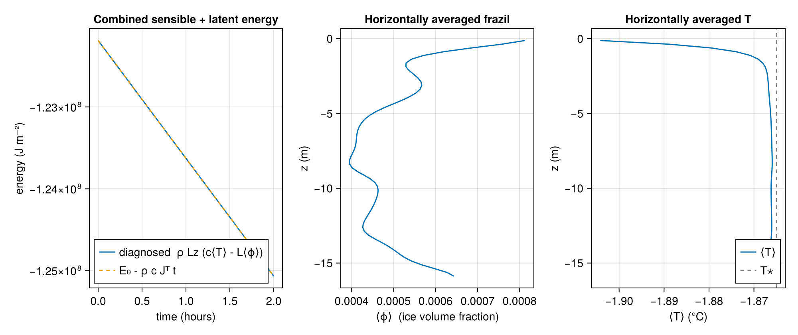

Frazil ice in a cooling, wind-driven boundary layer (2D)
This example forms frazil ice in a turbulent ocean surface boundary layer. We start with cold, salty, unstratified water sitting at its freezing point, and apply a surface wind stress and surface cooling. The cooling pushes the surface water below its freezing point (supercooling); the FrazilModel then grows suspended frazil ice, releasing latent heat that holds the temperature near freezing.
Crucially, the frazil model rejects brine: growing salt-free ice concentrates salt in the remaining water, making it denser. Near the freezing point the thermal expansion is tiny, so it is this brine rejection — not the cooling directly — that drives the convective turbulence, which in turn mixes the frazil down through the boundary layer rather than leaving it trapped at the surface.
The frazil model
The ice volume fraction $ϕ$ and temperature $T$ relax toward the local freezing point $T⋆ = T^f(S, z)$ on a timescale $τ$:
\[\frac{\mathrm{D} T}{\mathrm{D} t} = \frac{T⋆ - T}{τ}, \qquad \frac{\mathrm{D} ϕ}{\mathrm{D} t} = \frac{T⋆ - T}{τ\, 𝒯}, \qquad 𝒯 = \frac{L}{c}.\]
Supercooled water ($T < T⋆$) grows frazil and is warmed back toward freezing by the released latent heat. Because $c\,(T⋆-T)/τ = L\,(T⋆-T)/(τ𝒯)$, the source terms conserve the combined sensible-plus-latent energy $c\,T - L\,ϕ$ — we verify this below. Here $τ$ is a constant; see FrazilModel for the population-based timescales used by more complete models.
using SnowingOcean
using Oceananigans
using Oceananigans.Units
using CairoMakieSetup
A 2D $x$–$z$ domain (Flat in y). Increasing the y size makes it 3D.
Lx, Lz = 64, 16
Nx, Nz = 128, 64
grid = RectilinearGrid(size = (Nx, Nz),
halo = (5, 5),
topology = (Periodic, Flat, Bounded),
x = (0, Lx),
z = (-Lz, 0))128×1×64 RectilinearGrid{Float64, Periodic, Flat, Bounded} on CPU with 5×0×5 halo
├── Periodic x ∈ [0.0, 64.0) regularly spaced with Δx=0.5
├── Flat y
└── Bounded z ∈ [-16.0, 0.0] regularly spaced with Δz=0.25Physical constants and surface forcing: a wind stress and a destabilizing heat loss.
ρₒ = 1026.0 # reference density (kg m⁻³)
cₒ = 3991.0 # heat capacity (J kg⁻¹ K⁻¹)
L = 3.34e5 # latent heat of fusion (J kg⁻¹)
Q = 400.0 # surface heat loss (W m⁻²)
Jᵀ = Q / (ρₒ * cₒ) # kinematic heat flux (positive upward ⇒ cooling), K m s⁻¹
τx = -0.02 / ρₒ # kinematic wind stress (m² s⁻²)
T_bcs = FieldBoundaryConditions(top = FluxBoundaryCondition(Jᵀ))
u_bcs = FieldBoundaryConditions(top = FluxBoundaryCondition(τx))Oceananigans.FieldBoundaryConditions, with boundary conditions
├── west: DefaultBoundaryCondition (FluxBoundaryCondition: Nothing)
├── east: DefaultBoundaryCondition (FluxBoundaryCondition: Nothing)
├── south: DefaultBoundaryCondition (FluxBoundaryCondition: Nothing)
├── north: DefaultBoundaryCondition (FluxBoundaryCondition: Nothing)
├── bottom: DefaultBoundaryCondition (FluxBoundaryCondition: Nothing)
├── top: FluxBoundaryCondition: -1.94932e-5
└── immersed: DefaultBoundaryCondition (FluxBoundaryCondition: Nothing)The frazil model and its forcings
FrazilModel carries the relaxation timescale and the thermodynamic constants; frazil_forcing returns the (T, ϕ) source terms to pass to the model.
A depth-independent freezing point is appropriate for this shallow surface layer (the depth dependence changes Tᶠ by only ~0.01 °C over 16 m), so the unstratified interior sits exactly at freezing and only the cooled surface supercools.
The frazil-formation timescale τ controls where frazil appears. When τ is much shorter than the turbulent mixing time, supercooled water crystallizes at the surface before it can be mixed down. Choosing τ comparable to the convective/shear mixing time instead lets the turbulence stir supercooled water (and frazil) through the boundary layer, so frazil penetrates to depth.
liquidus = DepthDependentLiquidus(depth_slope=0)
frazil = FrazilModel(300.0; liquidus, latent_heat=L, heat_capacity=cₒ) # 5 min timescale
forcing = frazil_forcing(frazil)(T = DiscreteForcing{FrazilModel{Float64, DepthDependentLiquidus{LinearLiquidus{Float64}, Float64}, Float64}}
├── func: _frazil_temperature_forcing (generic function with 1 method)
└── parameters: FrazilModel{Float64, DepthDependentLiquidus{LinearLiquidus{Float64}, Float64}, Float64}(300.0, DepthDependentLiquidus{LinearLiquidus{Float64}, Float64}(LinearLiquidus(freshwater_melting_temperature = 0.0832, slope = 0.0573){Float64}
├── freshwater_melting_temperature: 0.0832
└── slope: 0.0573, 0.0), 334000.0, 3991.0), ϕ = DiscreteForcing{FrazilModel{Float64, DepthDependentLiquidus{LinearLiquidus{Float64}, Float64}, Float64}}
├── func: _frazil_concentration_forcing (generic function with 1 method)
└── parameters: FrazilModel{Float64, DepthDependentLiquidus{LinearLiquidus{Float64}, Float64}, Float64}(300.0, DepthDependentLiquidus{LinearLiquidus{Float64}, Float64}(LinearLiquidus(freshwater_melting_temperature = 0.0832, slope = 0.0573){Float64}
├── freshwater_melting_temperature: 0.0832
└── slope: 0.0573, 0.0), 334000.0, 3991.0), S = DiscreteForcing{FrazilModel{Float64, DepthDependentLiquidus{LinearLiquidus{Float64}, Float64}, Float64}}
├── func: _frazil_salt_forcing (generic function with 1 method)
└── parameters: FrazilModel{Float64, DepthDependentLiquidus{LinearLiquidus{Float64}, Float64}, Float64}(300.0, DepthDependentLiquidus{LinearLiquidus{Float64}, Float64}(LinearLiquidus(freshwater_melting_temperature = 0.0832, slope = 0.0573){Float64}
├── freshwater_melting_temperature: 0.0832
└── slope: 0.0573, 0.0), 334000.0, 3991.0))Model
Temperature and salinity set the buoyancy (linear equation of state); the frazil concentration ϕ is carried as a third tracer.
equation_of_state = LinearEquationOfState(thermal_expansion=3.87e-5, haline_contraction=7.86e-4)
buoyancy = SeawaterBuoyancy(; equation_of_state)
model = NonhydrostaticModel(grid; buoyancy, forcing,
advection = WENO(order=9),
coriolis = FPlane(f=1e-4),
closure = ScalarDiffusivity(ν=1e-3, κ=1e-3),
tracers = (:T, :S, :ϕ),
boundary_conditions = (; T=T_bcs, u=u_bcs))NonhydrostaticModel{CPU, RectilinearGrid}(time = 0 seconds, iteration = 0)
├── grid: 128×1×64 RectilinearGrid{Float64, Periodic, Flat, Bounded} on CPU with 5×0×5 halo
├── timestepper: RungeKutta3TimeStepper
├── advection scheme: WENO{5, Float64, Oceananigans.Utils.BackendOptimizedDivision}(order=9)
├── tracers: (T, S, ϕ)
├── closure: ScalarDiffusivity{ExplicitTimeDiscretization}(ν=0.001, κ=(T=0.001, S=0.001, ϕ=0.001))
├── buoyancy: SeawaterBuoyancy with g=9.80665 and LinearEquationOfState(thermal_expansion=3.87e-5, haline_contraction=0.000786) with ĝ = NegativeZDirection()
└── coriolis: FPlane{Float64}(f=0.0001)Unstratified, cold, salty water exactly at its freezing point, with a little noise.
S₀ = 34.0
T★ = melting_temperature(frazil.liquidus, S₀, 0)
Tᵢ(x, z) = T★ + 1e-4 * randn()
set!(model, T=Tᵢ, S=S₀, ϕ=0)Energy diagnostic
We track the column-integrated, horizontally averaged combined energy per unit area, $\mathcal{E} = ρ\, L_z\, (c\,\langle T \rangle - L\,\langle ϕ \rangle)$. The frazil source conserves it, so $\mathcal{E}$ should change only through the surface cooling, i.e. $\mathcal{E}(t) = \mathcal{E}(0) - ρ\, c\, J^T t$. Plotting both is a conservation check.
domain_mean(φ) = sum(interior(φ)) / length(interior(φ))
total_energy() = ρₒ * Lz * (cₒ * domain_mean(model.tracers.T) - L * domain_mean(model.tracers.ϕ))
times = Float64[]
energies = Float64[]
simulation = Simulation(model, Δt=0.5, stop_time=2hours)
conjure_time_step_wizard!(simulation, cfl=0.7, max_Δt=5.0)
function record!(sim)
push!(times, time(sim))
push!(energies, total_energy())
return nothing
end
simulation.callbacks[:energy] = Callback(record!, TimeInterval(2minutes))
run!(simulation)[ Info: Initializing simulation...
[ Info: ... simulation initialization complete (3.109 seconds)
[ Info: Executing initial time step...
[ Info: ... initial time step complete (3.939 seconds).
[ Info: Simulation is stopping after running for 33.223 seconds.
[ Info: Simulation time 2 hours equals or exceeds stop time 2 hours.Results
Energy conservation: the diagnosed energy follows the line set by the surface cooling.
E₀ = energies[1]
expected = E₀ .- ρₒ * cₒ * Jᵀ .* times61-element Vector{Float64}:
-1.2218775634293914e8
-1.2223575634293914e8
-1.2228375634293914e8
-1.2233175634293914e8
-1.2237975634293914e8
-1.2242775634293914e8
-1.2247575634293914e8
-1.2252375634293914e8
-1.2257175634293914e8
-1.2261975634293914e8
⋮
-1.2468375634293914e8
-1.2473175634293914e8
-1.2477975634293914e8
-1.2482775634293914e8
-1.2487575634293914e8
-1.2492375634293914e8
-1.2497175634293914e8
-1.2501975634293914e8
-1.2506775634293914e8Horizontal averages (over x) of the final frazil concentration and temperature.
xϕ = sum(interior(model.tracers.ϕ), dims=1)[1, 1, :] ./ Nx
xT = sum(interior(model.tracers.T), dims=1)[1, 1, :] ./ Nx
zc = znodes(grid, Center())
fig = Figure(size=(1000, 420))
axE = Axis(fig[1, 1], xlabel="time (hours)", ylabel="energy (J m⁻²)",
title="Combined sensible + latent energy")
lines!(axE, times ./ hour, energies, label="diagnosed ρ Lz (c⟨T⟩ - L⟨ϕ⟩)")
lines!(axE, times ./ hour, expected, linestyle=:dash, label="E₀ - ρ c Jᵀ t")
axislegend(axE, position=:lb)
axϕ = Axis(fig[1, 2], xlabel="⟨ϕ⟩ (ice volume fraction)", ylabel="z (m)",
title="Horizontally averaged frazil")
lines!(axϕ, xϕ, zc)
axT = Axis(fig[1, 3], xlabel="⟨T⟩ (°C)", ylabel="z (m)", title="Horizontally averaged T")
lines!(axT, xT, zc, label="⟨T⟩")
vlines!(axT, [T★], color=:gray, linestyle=:dash, label="T⋆")
axislegend(axT, position=:rb)
fig
This page was generated using Literate.jl.